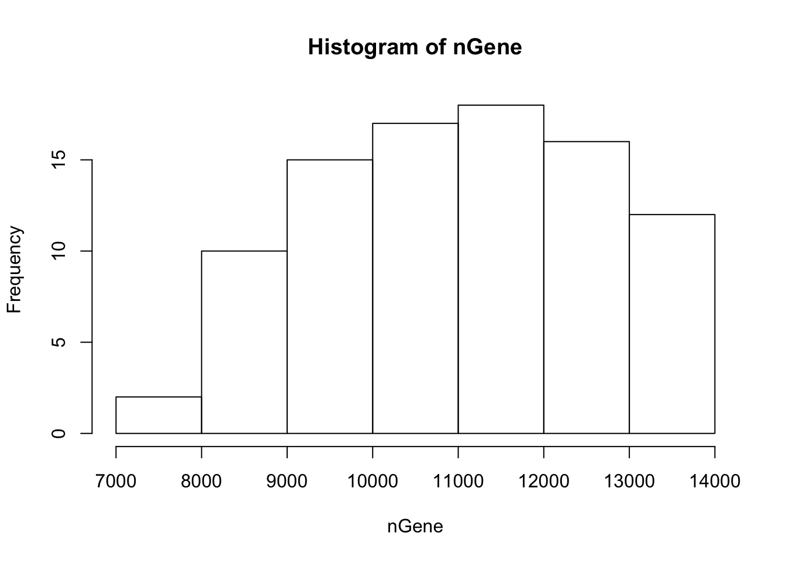
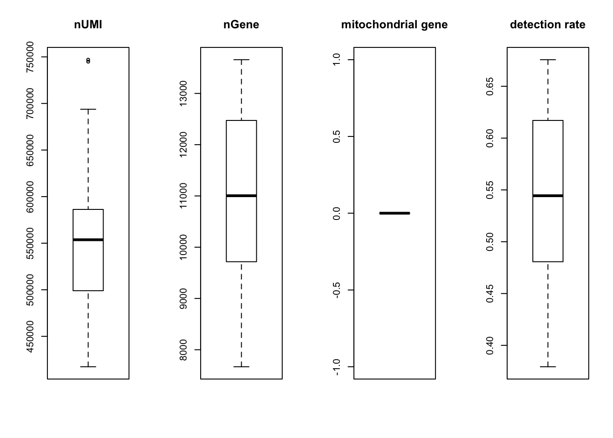
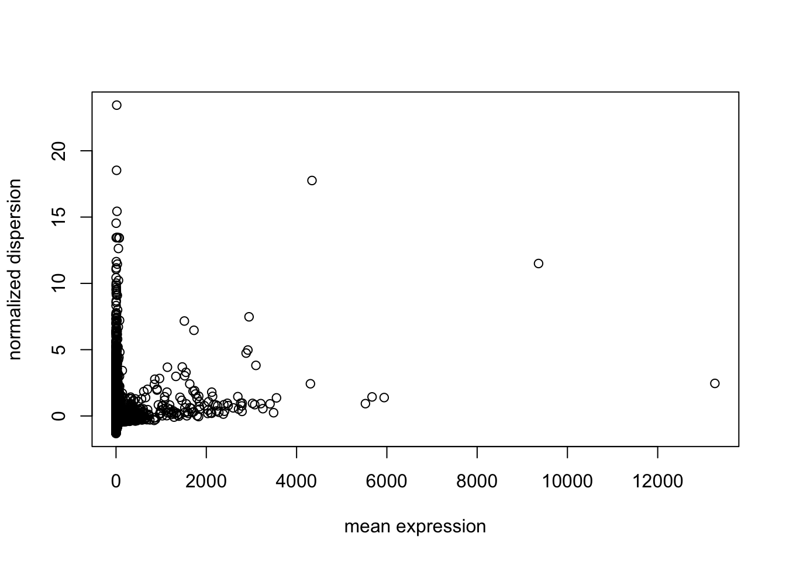
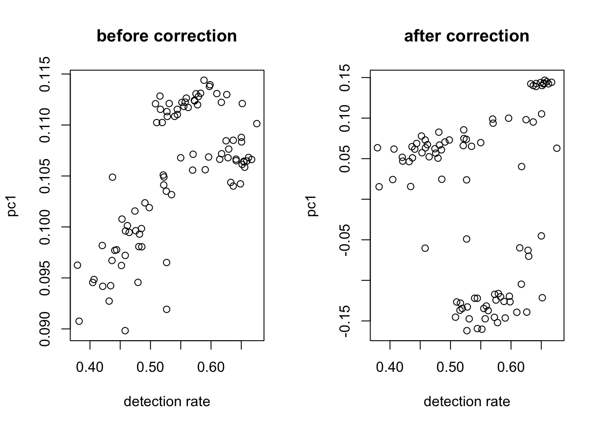
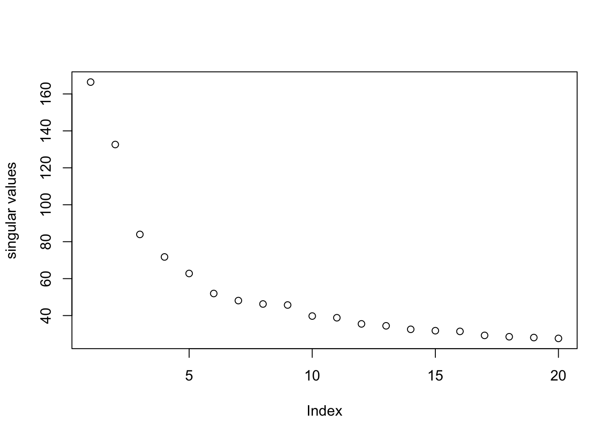
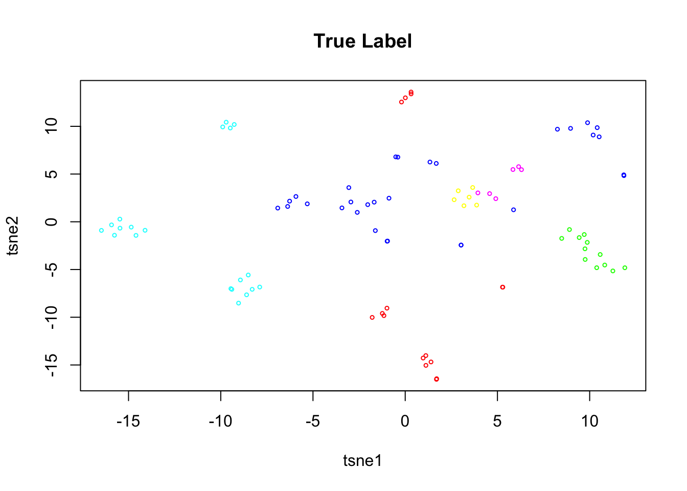
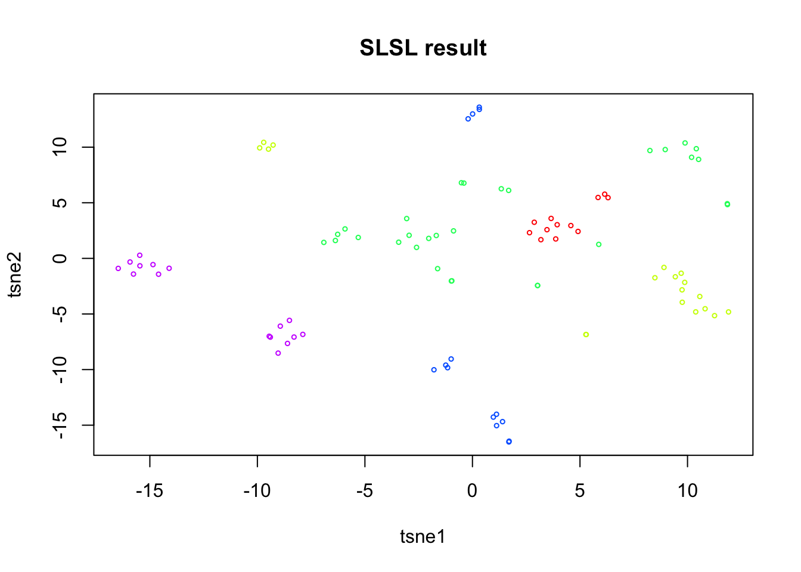
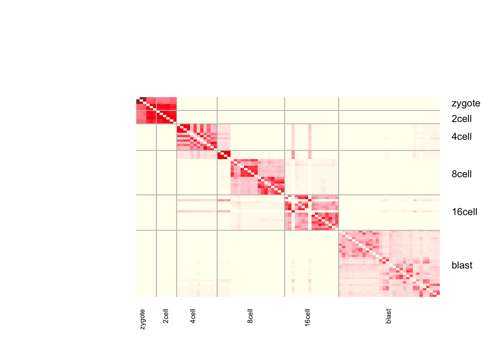

Last updated: 2018-08-30
workflowr checks: (Click a bullet for more information) ✔ R Markdown file: up-to-date
Great! Since the R Markdown file has been committed to the Git repository, you know the exact version of the code that produced these results.
✔ Environment: empty
Great job! The global environment was empty. Objects defined in the global environment can affect the analysis in your R Markdown file in unknown ways. For reproduciblity it’s best to always run the code in an empty environment.
✔ Seed:
set.seed(20180618)
The command set.seed(20180618) was run prior to running the code in the R Markdown file. Setting a seed ensures that any results that rely on randomness, e.g. subsampling or permutations, are reproducible.
✔ Session information: recorded
Great job! Recording the operating system, R version, and package versions is critical for reproducibility.
✔ Repository version: fa8da96
wflow_publish or wflow_git_commit). workflowr only checks the R Markdown file, but you know if there are other scripts or data files that it depends on. Below is the status of the Git repository when the results were generated:
Ignored files:
Ignored: .Rhistory
Ignored: .Rproj.user/
Ignored: R/.Rhistory
Ignored: analysis/.Rhistory
Ignored: analysis/pipeline/.Rhistory
Untracked files:
Untracked: ..gif
Untracked: .DS_Store
Untracked: R/.DS_Store
Untracked: R/myheatmap.R
Untracked: analysis/.DS_Store
Untracked: analysis/10x_heatmap.pdf
Untracked: analysis/SLSL_marker_based_logcpm.pdf
Untracked: analysis/biomarkers.R
Untracked: analysis/cellref.pdf
Untracked: analysis/consistency_check.R
Untracked: analysis/dropseq_heatmap.pdf
Untracked: analysis/dropseq_sc3_result.Rdata
Untracked: analysis/dropseq_slsl1.Rdata
Untracked: analysis/marker-based.pdf
Untracked: analysis/normalization_test.R
Untracked: analysis/pbmcheat.pdf
Untracked: analysis/pbmcref.pdf
Untracked: analysis/pipeline/0_dropseq/
Untracked: analysis/pipeline/1_10X/
Untracked: analysis/pipeline/2_zeisel/
Untracked: analysis/pipeline/3_smallsets/
Untracked: analysis/writeup/cite.log
Untracked: analysis/writeup/paper.aux
Untracked: analysis/writeup/paper.bbl
Untracked: analysis/writeup/paper.blg
Untracked: analysis/writeup/paper.log
Untracked: analysis/writeup/paper.out
Untracked: analysis/writeup/paper.synctex.gz
Untracked: analysis/writeup/paper.tex
Untracked: analysis/writeup/writeup.aux
Untracked: analysis/writeup/writeup.bbl
Untracked: analysis/writeup/writeup.blg
Untracked: analysis/writeup/writeup.dvi
Untracked: analysis/writeup/writeup.log
Untracked: analysis/writeup/writeup.out
Untracked: analysis/writeup/writeup.synctex.gz
Untracked: analysis/writeup/writeup.tex
Untracked: analysis/writeup/writeup2.aux
Untracked: analysis/writeup/writeup2.bbl
Untracked: analysis/writeup/writeup2.blg
Untracked: analysis/writeup/writeup2.log
Untracked: analysis/writeup/writeup2.out
Untracked: analysis/writeup/writeup2.pdf
Untracked: analysis/writeup/writeup2.synctex.gz
Untracked: analysis/writeup/writeup2.tex
Untracked: analysis/writeup/writeup3.aux
Untracked: analysis/writeup/writeup3.log
Untracked: analysis/writeup/writeup3.out
Untracked: analysis/writeup/writeup3.synctex.gz
Untracked: analysis/writeup/writeup3.tex
Untracked: data/unnecessary_in_building/
Untracked: dropseq_heatmap.pdf
Untracked: normalized_out_1.Rdata
Untracked: not_normalized_out_1.Rdata
Untracked: src/.gitignore
Untracked: tutorial2.Rmd
Unstaged changes:
Modified: NAMESPACE
Modified: R/RcppExports.R
Modified: analysis/example_10x.Rmd
Modified: analysis/example_dropseq.Rmd
Modified: analysis/pipeline/.DS_Store
Modified: analysis/writeup/.DS_Store
Modified: data/.DS_Store
| File | Version | Author | Date | Message |
|---|---|---|---|---|
| html | 0d53b7e | tk382 | 2018-08-29 | Build site. |
load('data/Yan.rda')
X = as.matrix(yan)
genenames = rownames(X)
truelabel = as.character(ann$cell_type1)
numClust = 6
rm(ann, yan)nGene = colSums(X > 0)
hist(nGene)
| Version | Author | Date |
|---|---|---|
| 0d53b7e | tk382 | 2018-08-29 |
summaryX = cellFilter(X = X,
genenames = rownames(X),
minGene = -Inf,
maxGene = Inf,
maxMitoProp = 0.1)
tmpX = summaryX$X
nUMI = summaryX$nUMI
nGene = summaryX$nGene
percent.mito = summaryX$percent.mito
det.rate = summaryX$det.rate
par(mfrow = c(1,4))
boxplot(nUMI, main='nUMI');
boxplot(nGene, main='nGene');
boxplot(percent.mito, main='mitochondrial gene', ylim=c(0,0.5));
boxplot(det.rate, main='detection rate', ylim=c(0,0.1))
| Version | Author | Date |
|---|---|---|
| 0d53b7e | tk382 | 2018-08-29 |
X = X[rowSums(X) > 0, ]
genenames = genenames[rowSums(X) > 0]
#gene filter by dispersion
disp = dispersion(X, bins = 20)
plot(disp$z ~ disp$genemeans,
xlab = "mean expression",
ylab = "normalized dispersion")
| Version | Author | Date |
|---|---|---|
| 0d53b7e | tk382 | 2018-08-29 |
select = which(abs(disp$z) > 1)
X = X[select, ]
genenames = genenames[select]Use quantile-normalization to make the distribution of each cell the same.
nX = quantile_normalize(as.matrix(X))After normalization, the linear relationship between the first PC and the detection rate usually disappears. The plots show that even without correction, the two are not heavily correlated. So we do not regress out the detection rate.
#take log
logX = as.matrix(log(nX + 1))
#check dependency
out = correct_detection_rate(logX, det.rate)
| Version | Author | Date |
|---|---|---|
| 0d53b7e | tk382 | 2018-08-29 |
#regress out
log.cpm = out$residual
# log.cpm = logXpc = irlba(log.cpm, 20)
plot(pc$d, ylab = "singular values")
| Version | Author | Date |
|---|---|---|
| 0d53b7e | tk382 | 2018-08-29 |
tsne = Rtsne(pc$v[,1:15], dims=2, perplexity = 10, pca=FALSE)
df = data.frame(tsne1 = tsne$Y[,1], tsne2 = tsne$Y[,2], truelabel = truelabel)
ggplot(df, aes(x=tsne1, y=tsne2, col = truelabel)) + geom_point()+
ggtitle("True Label")
| Version | Author | Date |
|---|---|---|
| 0d53b7e | tk382 | 2018-08-29 |
rm(pc)Run SLSL on the log.cpm matrix.
out = SLSL(log.cpm, log=FALSE,
filter = FALSE,
correct_detection_rate = FALSE,
klist = c(5,10,15),
sigmalist = c(1,1.5,2),
kernel_type = "combined",
verbose=FALSE)
df$SLSL = as.factor(out$result)
ggplot(df, aes(x=tsne1, y=tsne2, col=SLSL))+geom_point()
| Version | Author | Date |
|---|---|---|
| 0d53b7e | tk382 | 2018-08-29 |
adj.rand.index(out$result, as.numeric(as.factor(truelabel)))[1] 0.8681222S = as.matrix(out$S)
palette.gr.marray <- colorRampPalette(c("ivory", "pink", "red", "brown"))(30)
labRow = rep("", 90)
labRow[c(3, 10,18, 35, 52, 76) ] = c("zygote",
"2cell", "4cell", "8cell", "16cell",
"blast")
heatmap.2(S,
trace = "none",
col = palette.gr.marray,
Colv = F,
Rowv = F,
rowsep = which(truelabel[1:89] != truelabel[2:90]),
colsep = which(truelabel[1:89] != truelabel[2:90]),
sepcolor = "gray",
dendrogram = "none",
labRow = labRow,
labCol = labRow,
key = F,
breaks = seq(min(S), max(S),length=31),
cexRow = 1,
symbreaks = T)
| Version | Author | Date |
|---|---|---|
| 0d53b7e | tk382 | 2018-08-29 |
sessionInfo()R version 3.5.1 (2018-07-02)
Platform: x86_64-apple-darwin15.6.0 (64-bit)
Running under: macOS Sierra 10.12.5
Matrix products: default
BLAS: /Library/Frameworks/R.framework/Versions/3.5/Resources/lib/libRblas.0.dylib
LAPACK: /Library/Frameworks/R.framework/Versions/3.5/Resources/lib/libRlapack.dylib
locale:
[1] en_US.UTF-8/en_US.UTF-8/en_US.UTF-8/C/en_US.UTF-8/en_US.UTF-8
attached base packages:
[1] parallel stats graphics grDevices utils datasets methods
[8] base
other attached packages:
[1] bindrcpp_0.2.2 gridExtra_2.3
[3] gdata_2.18.0 stargazer_5.2.2
[5] abind_1.4-5 broom_0.5.0
[7] gplots_3.0.1 diceR_0.5.1
[9] Rtsne_0.13 igraph_1.2.2
[11] scatterplot3d_0.3-41 pracma_2.1.4
[13] fossil_0.3.7 shapefiles_0.7
[15] foreign_0.8-71 maps_3.3.0
[17] sp_1.3-1 caret_6.0-80
[19] lattice_0.20-35 reshape_0.8.7
[21] dplyr_0.7.6 ggplot2_3.0.0
[23] irlba_2.3.2 Matrix_1.2-14
[25] quadprog_1.5-5 inline_0.3.15
[27] matrixStats_0.54.0 SCNoisyClustering_0.1.0
loaded via a namespace (and not attached):
[1] nlme_3.1-137 bitops_1.0-6
[3] lubridate_1.7.4 dimRed_0.1.0
[5] rprojroot_1.3-2 tools_3.5.1
[7] backports_1.1.2 R6_2.2.2
[9] KernSmooth_2.23-15 rpart_4.1-13
[11] lazyeval_0.2.1 colorspace_1.3-2
[13] nnet_7.3-12 withr_2.1.2
[15] tidyselect_0.2.4 compiler_3.5.1
[17] git2r_0.23.0 labeling_0.3
[19] caTools_1.17.1.1 scales_0.5.0
[21] sfsmisc_1.1-2 DEoptimR_1.0-8
[23] robustbase_0.93-2 stringr_1.3.1
[25] digest_0.6.15 rmarkdown_1.10
[27] R.utils_2.6.0 pkgconfig_2.0.1
[29] htmltools_0.3.6 rlang_0.2.1
[31] ddalpha_1.3.4 bindr_0.1.1
[33] gtools_3.8.1 mclust_5.4.1
[35] ModelMetrics_1.1.0 R.oo_1.22.0
[37] magrittr_1.5 Rcpp_0.12.18
[39] munsell_0.5.0 R.methodsS3_1.7.1
[41] stringi_1.2.4 whisker_0.3-2
[43] yaml_2.2.0 MASS_7.3-50
[45] plyr_1.8.4 recipes_0.1.3
[47] grid_3.5.1 pls_2.6-0
[49] crayon_1.3.4 splines_3.5.1
[51] knitr_1.20 pillar_1.3.0
[53] reshape2_1.4.3 codetools_0.2-15
[55] stats4_3.5.1 CVST_0.2-2
[57] magic_1.5-8 glue_1.3.0
[59] evaluate_0.11 RcppArmadillo_0.8.600.0.0
[61] data.table_1.11.4 foreach_1.4.4
[63] gtable_0.2.0 purrr_0.2.5
[65] tidyr_0.8.1 kernlab_0.9-26
[67] assertthat_0.2.0 DRR_0.0.3
[69] gower_0.1.2 prodlim_2018.04.18
[71] class_7.3-14 survival_2.42-6
[73] geometry_0.3-6 timeDate_3043.102
[75] RcppRoll_0.3.0 tibble_1.4.2
[77] iterators_1.0.10 workflowr_1.1.1
[79] lava_1.6.2 ipred_0.9-6 This reproducible R Markdown analysis was created with workflowr 1.1.1